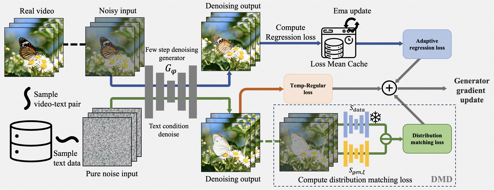

Adaptive Video Distillation: Mitigating Oversaturation and Temporal Collapse in Few-Step Generation
Overview
We incorporate Adaptive Regression Loss and Temporal Regularization Loss into Distribution Matching Distillation (DMD) to mitigate oversaturation and low dynamism in video tasks. Furthermore, our approach enables Supervised Fine-tuning (SFT) concurrently with distillation, facilitating effective style transfer.
Video Results
Comparison between baseline DMD and our Adaptive Video Distillation.
Method
Our method distills a pre-trained teacher model, denoted as $s_{\text{data}}$, into a few-step video generator $G_\phi$. The training procedure consists of the following steps:(1) A batch of real video-text pairs is sampled from the dataset. After applying noise perturbations to the videos, the student model performs denoising reconstruction. A regression loss is computed between the reconstructed video and the ground-truth video. Subsequently, this loss is adaptively weighted using our Loss Mean Cache to produce the final adaptive regression loss (see Sec.~\ref{subsec:temp} for details). (2) Text conditions are sampled from the dataset to guide the student model in generating a video from pure noise. The denoised output from this process is used to compute a temporal regularization loss (Eq.~\ref{eq:temp}) and a distribution matching loss (Eq.~\ref{eq:dmd}).(3) Finally, the generator $G_\phi$ is updated via gradient descent using the combined losses. The $s_{\text{gen}, \xi}$ in DMD are updated separately, following the methodology of DMD2 (this particular update step is not depicted in the figure for clarity).
Results

Our method consistently outperforms prior works.
BibTeX
@inproceedings{yourname2026paper,
title={Your Paper Title},
author={Author1 and Author2 and Author3},
booktitle={CVPR},
year={2026}
}